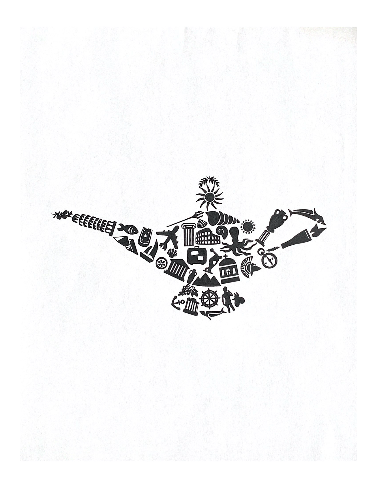
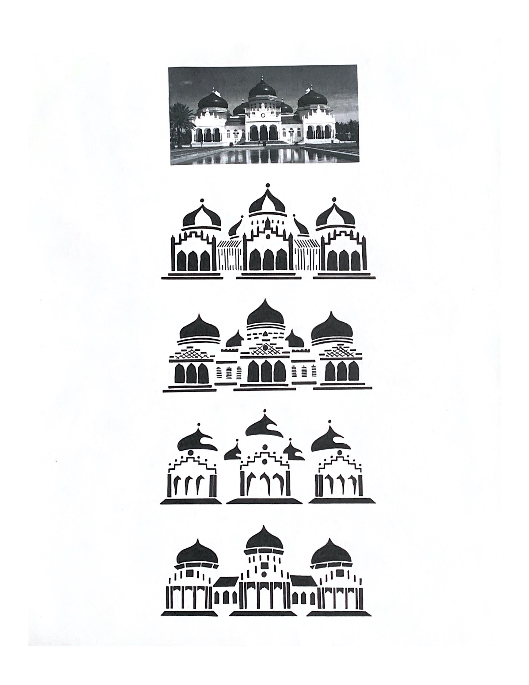
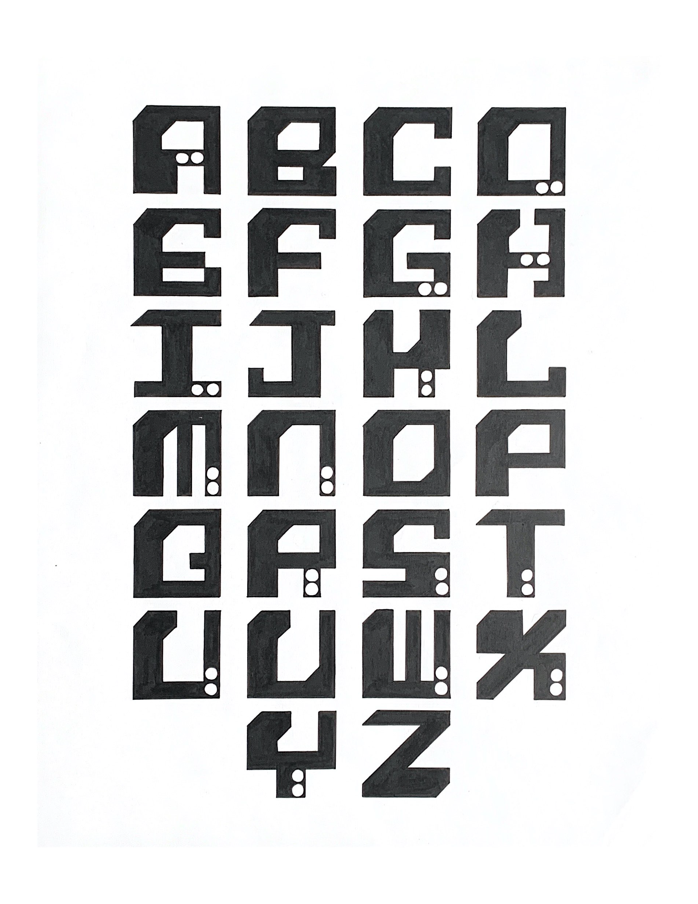
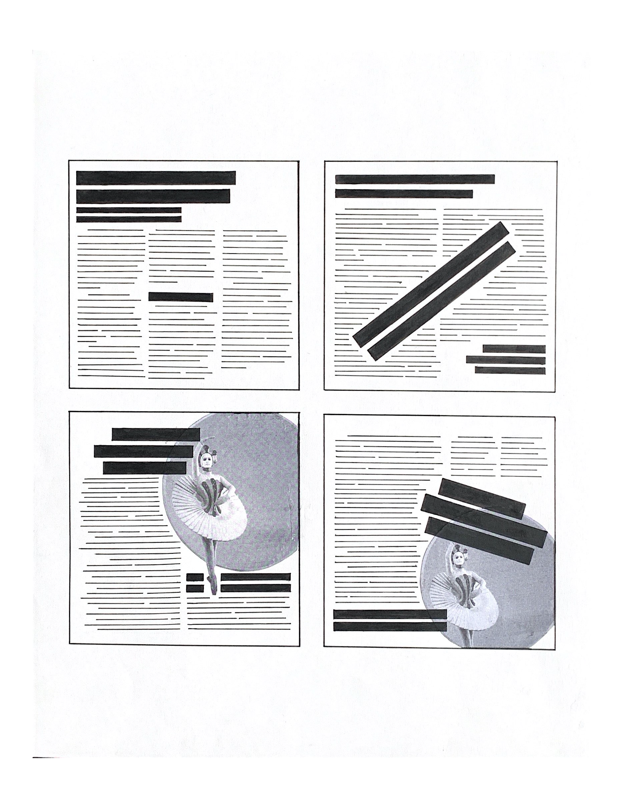
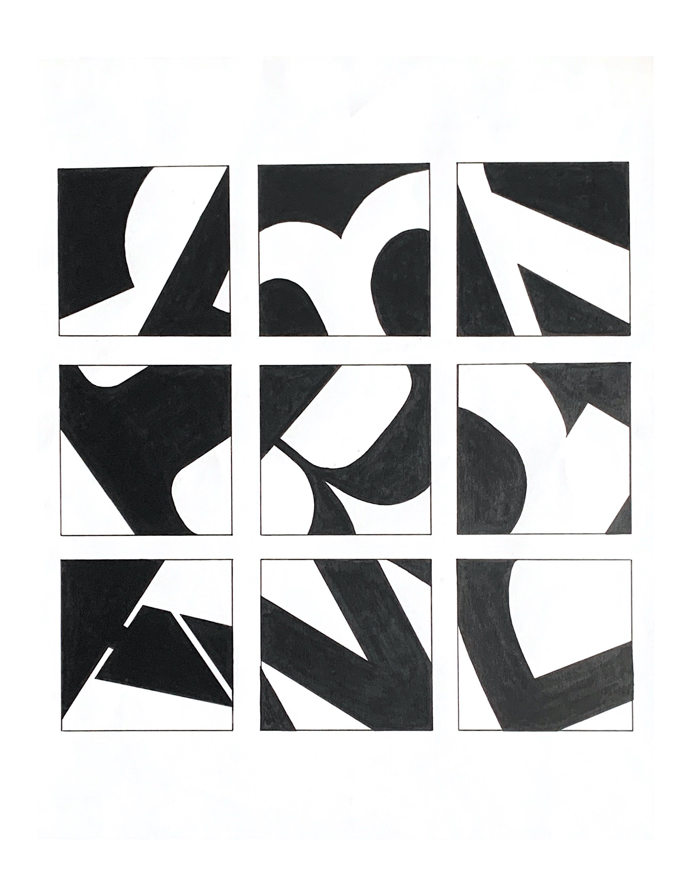

Graphic Design 1 at Binghamton University
    
6 projects, pen, marker, and paper
For my first Graphic Design course at Binghamton University, we experimented with marker and paper to create graphic shapes. The course consisted of 6 projects, all done by hand with pen and paper. Project 1 consisted of creating a shape out of multiple smaller shapes: for my idea, I chose a genie lamp filled with items related to the Mediterranean. This symbolized by wish or desire to travel back to my homeland again. The second project dealt with recreating a building in different lines and shapes, with 4 total different varities. For the third project, students had to create their own alphabet with 4 given grid units: a black square, a white square, a unique assigned unit, and a unit of choice. The fourth project mimiced editorial compositions for practice. The fifth project consisted of cropping letters and using positive & negative space for a balanced composition. For the final project, we had to create and color our own pattern.